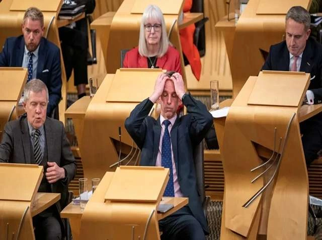

MSPs have rejected the opportunity to make Scotland the first portion of the UK to legalize assisted dying. MSPs voted rejected plans to legalize assisted death for terminally sick adults in Scotland. Following an extremely intense final debate, the bill was defeated by 69 to 57 votes. The final voting total was 57 favor, 69 against, and one abstention.
The final Stage 3 discussion and vote on the Assisted Dying for Terminally Ill Adults (Scotland) Bill took place on Tuesday evening. MSPs rejected the plans by 69 to 57 in a late-night vote on Tuesday, a bigger majority than expected. MSPs were given a free vote on the proposals, so they were not forced to vote along party lines.
It comes after legislators debated hundreds of amendments in long sessions as the proposed legislation passed through Holyrood. The result was previously deemed too close to call because MSPs were allowed a free vote rather than being "whipped" or instructed along party lines.

Why This News Matters:
This wasn't just another vote; it was a very personal and emotional decision about how people should be able to die. Scotland is against the bill because it doesn't want to let people die with help, even if they are about to die. It shows real worries about safety, pressure, and whether the system could keep weak people safe. But it also makes a lot of families and patients feel like they don't have a say in how their last days go.
Details of the Assisted Dying Bill
The ideas, put up by Liberal Democrat Liam McArthur, would have permitted terminally ill, mentally competent persons to request medical assistance to end their lives. The Assisted Dying for Terminally Ill Adults (Scotland) Bill would have made it legal for a medical practitioner or licensed health professional to administer a fatal substance to an eligible patient in order to end their life.
To get there, they'd have to sign two declarations stating their wishes and have doctors check to see whether they'd been pressured or persuaded. McArthur made many amendments to the measure in an attempt to persuade skeptical MSPs. This includes limiting eligibility to people with less than six months to live, despite the MSP previously opposing such a change.
Scottish Liberal Democrat Liam McArthur, who introduced the measure, has stated that it would be "the toughest and most comprehensively safeguarded assisted dying bill in the world." MSPs agreed to 175 amendments, including decisions to remove language giving Scottish governments the power to supervise the training and qualifications of medical workers participating in assisted dying.
Concerns and Opposition to the Bill
Opponents expressed many worries about the law, including fears that people may be pressured into an assisted dying. Throughout the final argument, opponents of the law used the word "coercion" repeatedly. Independent MSP Jeremy Balfour stated that disabled individuals were "terrified" of assisted dying legislation. He cautioned that the bill would unleash "a Pandora's box" and provide "no meaningful protection" against pressure.
Pam Duncan-Glancy asked MSPs to "choose to make it easier to live than to die". Critics stated that the emphasis should be on improving palliative care. Ruth Maguire of the SNP stated that "it's not a free choice if you don't have access to good palliative care."
Former First Minister Nicola Sturgeon expressed relief that it did not pass. It becomes an obligation, rather than a right, to die." Brian Whittle said cuts to social services made it too dangerous to support the plan. Edward Mountain stated that doctors will be allowed to offer death as a treatment.
Support for Assisted Dying and Emotional Testimonies
However, advocates of the law made some important contributions. McArthur mentioned the situation of one individual who was left "begging to have his life ended". Lorna Slater, former Green co-leader, choked back tears as she described her father's assisted death in Canada. "We should all have the right to choose," she urged the MSPs.
George Adam of the SNP spoke about his wife Stacey, who has Multiple Sclerosis, and stated that she would want a choice if faced with excruciating agony. Conservative MSP Sandesh Gulhane quoted testimony from a sufferer who stated, "You wouldn't let a dog die like this".
Supporters stated that MSPs did not have to choose between better palliative care and assisted dying. Alex Cole-Hamilton argued that the measure would create a "powerful matrix of safety". Rona Mackay stated that terminally ill people "do not" have a choice, asking: "Who are we to deny them that choice?"
Political Context and Reactions After the Vote
McArthur's assisted dying bill was the third introduced in the Scottish Parliament since devolution in 1999, but the first to pass a stage one vote. That all culminated in a watershed moment when MSPs voted decisively against assisted dying after some MSPs who supported the measure at stage one voted against it at stage three.
Liam McArthur spoke after the vote, saying he was "devastated" and warned that some MSPs may have regrets. He also stated that the problem was not "going away". Ally Thompson of Dignity in Dying expressed "huge disappointment." Dr Gordon Macdonald of Care Not Killing stated, "We are relieved that MSPs have decided not to support this legislation."
It means that no region of the UK will have access to assisted dying in the near future, despite recent legalisation votes in Jersey and the Isle of Man, as well as ongoing debate at Westminster over similar legislation.
What to Watch Next:
This conversation is far from over. The conflict between the two sides seems set to continue, particularly given the divergent paths taken by various nations and regions. Scotland will likely revisit this matter, and increased public discussion could reshape the discourse surrounding end-of-life rights and care throughout the UK.